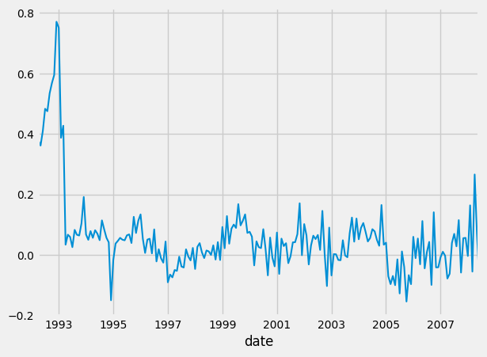

What is Stationary Data & Unit Root Tests
To prepare for the next lesson, I wanted to provide a quick lesson explaining what stationary data is.
What is Stationarity
By textbook definition, a stationary time series (a dataset which is a function of time) is one that contains properties which are not dependent on when the dataset is observed. In other words, a stationary time series is a dataset that only contains periodic, or repeating, (cyclic) properties that won’t affect the value at t. For example, time series which contain trends or have ‘seasons’ are not stationary because these properties will be affected depending on when you observe the graph. Contrary, a time series which is stationary would be white noise because it should look about the same, independent of when you observe the graph. To summarize, stationary time series will have no predictable patterns over time and it should have constant variance.
Differencing
One quick and easy way to convert a stationary time series to a non stationary one is by taking the difference between consecutive values; this is known as differencing.
To give an example, here is the data I will be using (all of these will be run in Google Colab, an environment I highly suggest you use!):
#installations
!pip install skforecast
# Data manipulation
# ==============================================================================
import numpy as np
import pandas as pd
from skforecast.datasets import fetch_dataset
# Plots
# ==============================================================================
import matplotlib.pyplot as plt
plt.style.use('fivethirtyeight')
plt.rcParams['lines.linewidth'] = 1.5
plt.rcParams['font.size'] = 10
# Data download
# ==============================================================================
data = fetch_dataset(name='h2o_exog', raw=True) #this dataset is on australian health system, from 1991 to 2008. This is from Hyndman (2023) fpp3
#Monthly expenditure ($AUD) on corticosteroid drugs that the Australian health system had between 1991 and 2008. Two additional variables (exog_1, exog_2) are simulated.
# Data preparation
# ==============================================================================
data = data.rename(columns={'fecha': 'date'})
data['date'] = pd.to_datetime(data['date'], format='%Y-%m-%d')
data = data.set_index('date')
data = data.asfreq('MS')
data = data.sort_index()
#data.head()
data = data.y
data.head()
This is a function that returns the differenced data, and as you can see, the new dataset will have a length of n-1 (as you can’t difference the first element in the dataset).
def difference_data(data):
new_data = data.copy()
for i in range(1, len(data)):
new_data.iloc[i] = data.iloc[i]-data.iloc[i-1]
return new_data
This is called differencing with an order of 1, because we take the difference between t and t-1.
Seasonal Differencing
But you can also difference data which contains seasons, by differencing with order greater than 1:
def seasonal_difference(data, seasons):
new_data = data.copy()
for i in range(len(data)):
if (i >= seasons):
new_data.iloc[i] = data.iloc[i] - data.iloc[i-seasons]
return new_data
seasonal_dif_data = seasonal_difference(data, 12)
seasonal_dif_data.plot()
Here the differencing happens between observations across seasons. So for example, if we had a montly dataset, you would difference observations across all Januaries, across all Marches, etc. \(y_t` = y_t - y_{t-m}\) where m is the number of seasons (for the montly example above, m = 12). This is called lag-m differencing.
If you run the above code, you should get something like this: 
Second-order differencing
This is usefull when the data still seems stationary after first-order differencing. \(y_t`` = y_t` - y_t` y_t`` = (y_t - y_{t-1}) - (y_{t-1} - y_{t-2}) = y_t - 2*y_{t-1} + y_{t-2}\) In this case, the output dataset will have a length of t-2, as you cannot take the difference of the first 2 values.
Transformations
As you probably got introduced to in the prior lessons, you can also apply transformations. For example, transforming the dataset with logorithms can help stabailize the variance.
def bickel_doksum_transform(data, lam):
new_data = data.copy()
if (lam == 0):
for i in range(len(data)):
new_data.iloc[i] = np.log(data.iloc[i])
else:
for i in range(len(data)):
new_data.iloc[i] = (get_sign(data.iloc[i])*(pow(abs(data.iloc[i]), lam)-1))/lam
return new_data
But for more information on this, please refer to the previous lessons.
What are Unit Root Tests
While there might be various different types of Unit Root Tests, I will specifically be referencing the ADF (Augmented Dickey-Fuller) test. This tests the null hypotheses: does the series have a unit root (non-stationary, non seasonal, and is a function of previous values/time, which basically means has an autocorrelation). If the statistic is less than a critical value then the null hypothesis is rejected and the series is stationary.
Let’s quickly observe the math behind why this would be true:
consider the below, some what generic, equation for our time series:
\[y_t = a_1 \cdot y_{t-1} + \mathscr{E}_t\]if that doesn’t trend to a long therm mean (meaning it can “drift away”), then it has a unit root. It has a unit root (a root of 1) when a = 1 because the characteristic equation
\[m - a_1 = 0\]which has a root of 1.
So, that means that at some point in time, y_t will be based off “random drift” or “random walk”, which is unpredictable because it’s random. Logically, this makes sense because once we come to the t value which will give use a unit root, then the data becomes random, so it cannot tend to a long term mean, by definition.
Below is the code I used with our dataset (and previously provided functions) to do this test:
from statsmodels.tsa.stattools import adfuller
adftest = adfuller(data, maxlag=12, autolag='AIC', regression='ct')
#adftest = adfuller(seasonal_difference(data, 12), maxlag=12, autolag='AIC', regression='ct')
print("ADF Test Results")
print("Null Hypothesis: The series has a unit root (non-stationary)")
print("ADF-Statistic:", adftest[0])
print("P-Value:", adftest[1]) #IF THIS IS BELOW .05, THEN IT IS STATIONARY
print("Number of lags:", adftest[2])
print("Number of observations:", adftest[3])
print("Critical Values:", adftest[4])
print("Note: If P-Value is smaller than 0.05, we reject the null hypothesis and the series is stationary")
Which should provide you with the below output:
ADF Test Results
Null Hypothesis: The series has a unit root (non-stationary)
ADF-Statistic: -1.775994155207604
P-Value: 0.7162169120872566
Number of lags: 12
Number of observations: 182
Critical Values: {'1%': -4.009392790586421, '5%': -3.434893396561173, '10%': -3.141378799874199}
Note: If P-Value is smaller than 0.05, we reject the null hypothesis and the series is stationary
Since we fed in non-stationary data (the original), the P-Value is 0.7162, which is greater than the critical value of 0.05, thus we don’t reject the hypothesis, and the data is not stationary, as expected.
Below are some nice references from this wikipedia article:
” If the other roots of the characteristic equation lie inside the unit circle—that is, have a modulus (absolute value) less than one—then the first difference of the process will be stationary; otherwise, the process will need to be differenced multiple times to become stationary.[1] If there are d unit roots, the process will have to be differenced d times in order to make it stationary.[2] Due to this characteristic, unit root processes are also called difference stationary.[3][4] “
” If the process has a unit root, then it is a non-stationary time series. That is, the moments of the stochastic process depend on t {\displaystyle t}. To illustrate the effect of a unit root, we can consider the first order case, starting from y0 = 0: “
To summarize:
- Stationary data is when the time series contains properties which are not dependent on when the dataset is observed.
- You can make your own non-stationary by differencing
- You can fix the variance via transformations
- If a dataset has a unit root, then the data is non-stationary
- You can use a ADF test to statistically measure the amount of “stationarity”
Subscribe to Burak Ayyorgun
Get the latest posts delivered right to your inbox